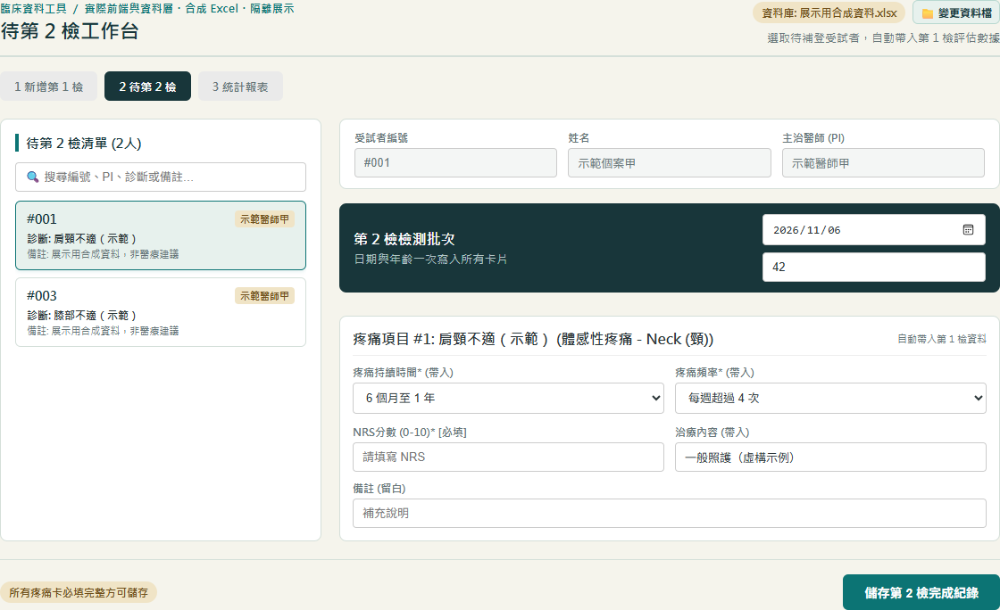

Ning ／ AI 應用・流程改善
讓 AI 從「能用」
到「可信」
需求轉譯 × 規則設計 × 品質驗收
我在醫療生技公司做專案。工作上卡住的地方，我先講清楚要什麼，交給 AI Agent 做成工具，再拿實際資料逐項核對，確認能用了才交出去。
代表作 ／ 工作上實際在用
臨床收案工具

約 2 天做出第一個可用版本
2 位收案人員在用
205 名受試者紀錄由工具管理
截至 2026 年 11 月・畫面為假資料看案例 →
我做什麼
AI 負責寫程式，這三件事由我負責
- 1
需求轉譯
先弄清楚現場哪裡卡住，再寫成 AI 做得出來的需求。
例：收案時，誰還沒做第二次評估要翻紙本才知道。
- 2
規則設計
把判斷標準寫清楚，讓 AI 每次照同樣的方式做。
例：回測參數怎麼挑，寫成固定步驟，不讓 AI 自己決定。
- 3
品質驗收
AI 說做完了，我用實際資料再核對一次。
例：本機回測結果和 TradingView 的交易清單逐筆對照。
作品
我做的 4 個工具
臨床收案工具是我和同事在用；其他三個是我自己用的。
工作 ／ 臨床收案
臨床收案工具
收案資料改用表單輸入，自動列出還沒做第二次評估的人。
PythonExcelAI Agent
2 位收案人員使用（含本人）・假資料展示看案例 →
個人 ／ 資訊整理
AI 新聞收件匣
看到的文章丟進 LINE 就存好，每天早上收到短評，再決定哪些值得試。
LINECloudflare WorkerNotion
自用看案例 →
個人 ／ 交易風險管理
LotCompass
不知道每個策略該下幾手時，用歷史數據和風險規則算出建議手數，不靠感覺決定。
TradingView 匯出資料桌面程式
自用・假資料展示看案例 →
個人 ／ 交易策略回測
Local-Backtest
在自己電腦上批次測試交易策略，結果和 TradingView 逐筆核對。
PythonStreamlitTradingView 對照
自用・假資料展示看案例 →
工作方法
把做事步驟寫下來，讓 AI 照著做
常用的步驟寫成 AI 照做的流程（Skill）；我糾正過的錯會記下來，下次照新規則做。
關於我
Ning
現職在醫療生技公司做專案，負責臨床研究計畫、IRB 申請和跨單位協調。工作之外也研究外匯交易，所以作品裡有幾個交易工具。
程式主要由 AI 完成；我負責想清楚要解決什麼、訂規則和驗收。我正在找 AI 應用與流程改善的工作。
呈現方式參考：AI Agent 作品分享平台的問題／過程／成果敘事，以及提供的流程與知識卡範例；未使用他人圖片或程式。此網站為獨立製作。